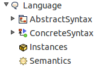

Language Definition

Lightning allows the definition of Languages via the specification of Alloy models, thus allowing the lightweight analysis of its components.
A Language is composed of Abstract Syntax Models defining the set of valid language models, of a concrete syntax model defining a visualization for those models and of a semantics model allowing to provide a meaning to language models.
How to Create a Language
You can create a Language by simply browsing to
File > New > Others ... and by selecting the entry "Language" under the Lightning category.
Note that if the Lightning perspective is open, then one can directly choose the menu item
File > New > Language in order to create a Language.
Once the wizard appears, you will be asked to provide the Lightning Project in which the language will be created. This information will be taken if possible from the entry selected in the project explorer.
The wizard offers you to create a default Abstract Syntax Model along with the language (as Language can't be instantiated without Abstract Syntax ). If you select this option, an empty alloy file will be created in the Abstract Syntax Folder.
What does my Language Contains ?
Your language is composed of 4 Folders:
- The Abstract Syntax Folder contains the models used to generate instances of your language. It contains by default an empty Alloy model if you have selected the corresponding option while creating the language (learn more)
- The Concrete Syntax Folder contains by default the Visual Language Model (LightningVLM.als) recognized by the tool. Later, it will also contain transformations from one abstract syntax model to the visual language model. This transformation together with the interpretation of the Visual Language Model elements, will allow to provide a visualization to any of the language model generated from the abstract syntax (learn more)
- The Semantics Folder which should contain the semantics related models is initially empty. The semantics provided in Alloy is of operational nature. Generally The semantics folder contains an alloy module that will encapsulate the abstract syntax model with the semantics notions of states and steps. (learn more)
- The Instance Folder , initially empty as well, is meant to contain the saved instances of your language. (Those instances can later be visualized and edited)
What can I do with my Language once it is defined ?
- You can verify the correctness of your models via instance generation. The application of the concrete Syntax make it much easier to verify
- You can define Abstract Syntax to Abstract Syntax model transformations and check their validity via instance generation as well. Those transformation can be seen as a first step towards the supports of language transformations. Semantics and concrete syntax consistency remain to be checked though.
- You can edit any language model through its abstract syntax and directly see the impact of your changes on its concrete syntax representation.
- You can export any instance to the XMI format under the condition that the corresponding Ecore model is provided.